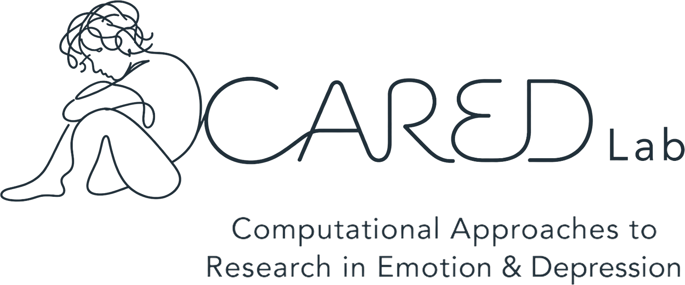

The CARED Lab, directed by Hadar Fisher, PhD, brings together clinical science and computational tools such as natural language processing, large language models (LLMs), machine learning, passive smartphone sensing, and intensive longitudinal data to understand how emotional processes contribute to depression and how shifts in these processes support better treatment outcomes.
Our research Join the labWhat we do
How emotions unfold, get stuck, and recover in daily life: emotion rigidity, feedback loops, and affective equilibria as risk markers for depression, especially in adolescence.
Detecting and tracking emotional states from what people say, write, and do: large language models (LLMs), language-based machine-learning models, facial expression analysis, and passive smartphone sensing.
How emotional experience, expression, and the patient-therapist relationship drive therapeutic change, and how to use these mechanisms to personalize treatment.
Latest